The original, as published: Tony R. Kuphaldt, Lessons In Electric Circuits, Three-phase power systems. CC BY 4.0, https://creativecommons.org/licenses/by/4.0/. Imported as published, from https://www.ibiblio.org/kuphaldt/electricCircuits/AC/AC_10.html https://www.ibiblio.org/kuphaldt/electricCircuits/AC/AC_10.html
Split-phase power systems achieve their high conductor efficiency and low safety risk by splitting up the total voltage into lesser parts and powering multiple loads at those lesser voltages, while drawing currents at levels typical of a full-voltage system. This technique, by the way, works just as well for DC power systems as it does for single-phase AC systems. Such systems are usually referred to as three-wire systems rather than split-phase because “phase” is a concept restricted to AC.
But we know from our experience with vectors and complex numbers that AC voltages don't always add up as we think they would if they are out of phase with each other. This principle, applied to power systems, can be put to use to make power systems with even greater conductor efficiencies and lower shock hazard than with split-phase.
Suppose that we had two sources of AC voltage connected in series just like the split-phase system we saw before, except that each voltage source was 120o out of phase with the other: (Figure below)
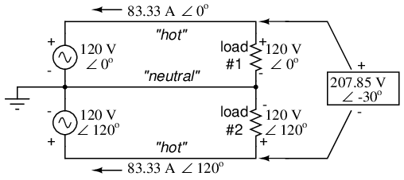
Pair of 120 Vac sources phased 120o, similar to split-phase.
Since each voltage source is 120 volts, and each load resistor is connected directly in parallel with its respective source, the voltage across each load must be 120 volts as well. Given load currents of 83.33 amps, each load must still be dissipating 10 kilowatts of power. However, voltage between the two “hot” wires is not 240 volts (120 ∠ 0o - 120 ∠ 180o) because the phase difference between the two sources is not 180o. Instead, the voltage is:
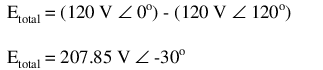
Nominally, we say that the voltage between “hot” conductors is 208 volts (rounding up), and thus the power system voltage is designated as 120/208.
If we calculate the current through the “neutral” conductor, we find that it is not zero, even with balanced load resistances. Kirchhoff's Current Law tells us that the currents entering and exiting the node between the two loads must be zero: (Figure below)
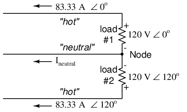
Neutral wire carries a current in the case of a pair of 120o phased sources.
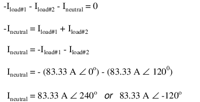
So, we find that the “neutral” wire is carrying a full 83.33 amps, just like each “hot” wire.
Note that we are still conveying 20 kW of total power to the two loads, with each load's “hot” wire carrying 83.33 amps as before. With the same amount of current through each “hot” wire, we must use the same gage copper conductors, so we haven't reduced system cost over the split-phase 120/240 system. However, we have realized a gain in safety, because the overall voltage between the two “hot” conductors is 32 volts lower than it was in the split-phase system (208 volts instead of 240 volts).
The fact that the neutral wire is carrying 83.33 amps of current raises an interesting possibility: since its carrying current anyway, why not use that third wire as another “hot” conductor, powering another load resistor with a third 120 volt source having a phase angle of 240o? That way, we could transmit more power (another 10 kW) without having to add any more conductors. Let's see how this might look: (Figure below)
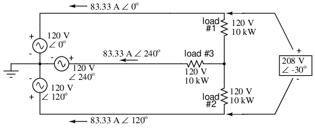
With a third load phased 120o to the other two, the currents are the same as for two loads.
A full mathematical analysis of all the voltages and currents in this circuit would necessitate the use of a network theorem, the easiest being the Superposition Theorem. I'll spare you the long, drawn-out calculations because you should be able to intuitively understand that the three voltage sources at three different phase angles will deliver 120 volts each to a balanced triad of load resistors. For proof of this, we can use SPICE to do the math for us: (Figure below, SPICE listing: 120/208 polyphase power system)
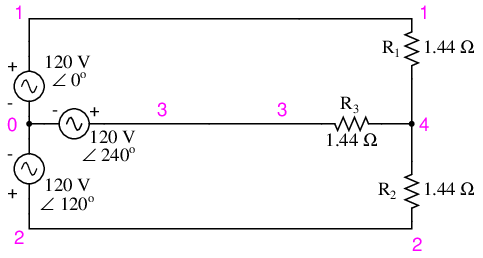
SPICE circuit: Three 3-Φ loads phased at 120o.
120/208 polyphase power system v1 1 0 ac 120 0 sin v2 2 0 ac 120 120 sin v3 3 0 ac 120 240 sin r1 1 4 1.44 r2 2 4 1.44 r3 3 4 1.44 .ac lin 1 60 60 .print ac v(1,4) v(2,4) v(3,4) .print ac v(1,2) v(2,3) v(3,1) .print ac i(v1) i(v2) i(v3) .end
VOLTAGE ACROSS EACH LOAD freq v(1,4) v(2,4) v(3,4) 6.000E+01 1.200E+02 1.200E+02 1.200E+02 VOLTAGE BETWEEN “HOT” CONDUCTORS freq v(1,2) v(2,3) v(3,1) 6.000E+01 2.078E+02 2.078E+02 2.078E+02 CURRENT THROUGH EACH VOLTAGE SOURCE freq i(v1) i(v2) i(v3) 6.000E+01 8.333E+01 8.333E+01 8.333E+01
Sure enough, we get 120 volts across each load resistor, with (approximately) 208 volts between any two “hot” conductors and conductor currents equal to 83.33 amps. (Figure below) At that current and voltage, each load will be dissipating 10 kW of power. Notice that this circuit has no “neutral” conductor to ensure stable voltage to all loads if one should open. What we have here is a situation similar to our split-phase power circuit with no “neutral” conductor: if one load should happen to fail open, the voltage drops across the remaining load(s) will change. To ensure load voltage stability in the event of another load opening, we need a neutral wire to connect the source node and load node together:
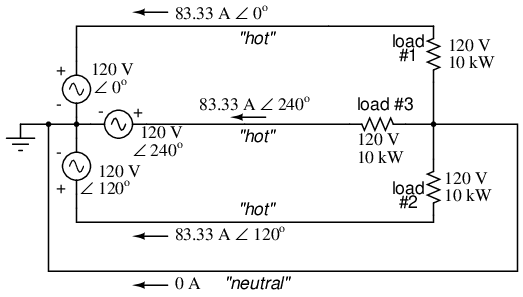
SPICE circuit annotated with simulation results: Three 3-Φ loads phased at 120o.
So long as the loads remain balanced (equal resistance, equal currents), the neutral wire will not have to carry any current at all. It is there just in case one or more load resistors should fail open (or be shut off through a disconnecting switch).
This circuit we've been analyzing with three voltage sources is called a polyphase circuit. The prefix “poly” simply means “more than one,” as in “polytheism” (belief in more than one deity), “polygon” (a geometrical shape made of multiple line segments: for example, pentagon and hexagon), and “polyatomic” (a substance composed of multiple types of atoms). Since the voltage sources are all at different phase angles (in this case, three different phase angles), this is a “polyphase” circuit. More specifically, it is a three-phase circuit, the kind used predominantly in large power distribution systems.
Let's survey the advantages of a three-phase power system over a single-phase system of equivalent load voltage and power capacity. A single-phase system with three loads connected directly in parallel would have a very high total current (83.33 times 3, or 250 amps. (Figure below)
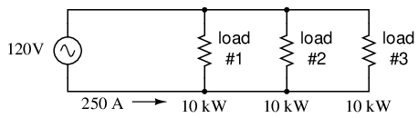
For comparison, three 10 Kw loads on a 120 Vac system draw 250 A.
This would necessitate 3/0 gage copper wire (very large!), at about 510 pounds per thousand feet, and with a considerable price tag attached. If the distance from source to load was 1000 feet, we would need over a half-ton of copper wire to do the job. On the other hand, we could build a split-phase system with two 15 kW, 120 volt loads. (Figure below)
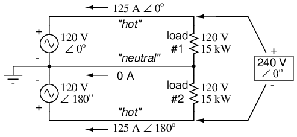
Split phase system draws half the current of 125 A at 240 Vac compared to 120 Vac system.
Our current is half of what it was with the simple parallel circuit, which is a great improvement. We could get away with using number 2 gage copper wire at a total mass of about 600 pounds, figuring about 200 pounds per thousand feet with three runs of 1000 feet each between source and loads. However, we also have to consider the increased safety hazard of having 240 volts present in the system, even though each load only receives 120 volts. Overall, there is greater potential for dangerous electric shock to occur.
When we contrast these two examples against our three-phase system (Figure above), the advantages are quite clear. First, the conductor currents are quite a bit less (83.33 amps versus 125 or 250 amps), permitting the use of much thinner and lighter wire. We can use number 4 gage wire at about 125 pounds per thousand feet, which will total 500 pounds (four runs of 1000 feet each) for our example circuit. This represents a significant cost savings over the split-phase system, with the additional benefit that the maximum voltage in the system is lower (208 versus 240).
One question remains to be answered: how in the world do we get three AC voltage sources whose phase angles are exactly 120o apart? Obviously we can't center-tap a transformer or alternator winding like we did in the split-phase system, since that can only give us voltage waveforms that are either in phase or 180o out of phase. Perhaps we could figure out some way to use capacitors and inductors to create phase shifts of 120o, but then those phase shifts would depend on the phase angles of our load impedances as well (substituting a capacitive or inductive load for a resistive load would change everything!).
The best way to get the phase shifts we're looking for is to generate it at the source: construct the AC generator (alternator) providing the power in such a way that the rotating magnetic field passes by three sets of wire windings, each set spaced 120o apart around the circumference of the machine as in Figure below.
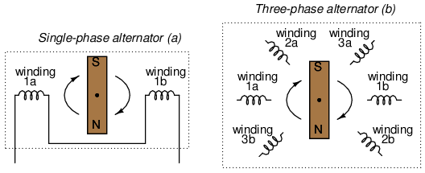
(a) Single-phase alternator, (b) Three-phase alternator.
Together, the six “pole” windings of a three-phase alternator are connected to comprise three winding pairs, each pair producing AC voltage with a phase angle 120o shifted from either of the other two winding pairs. The interconnections between pairs of windings (as shown for the single-phase alternator: the jumper wire between windings 1a and 1b) have been omitted from the three-phase alternator drawing for simplicity.
In our example circuit, we showed the three voltage sources connected together in a “Y” configuration (sometimes called the “star” configuration), with one lead of each source tied to a common point (the node where we attached the “neutral” conductor). The common way to depict this connection scheme is to draw the windings in the shape of a “Y” like Figure below.
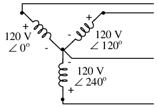
Alternator "Y" configuration.
The “Y” configuration is not the only option open to us, but it is probably the easiest to understand at first. More to come on this subject later in the chapter.
Let's take the three-phase alternator design laid out earlier (Figure below) and watch what happens as the magnet rotates.
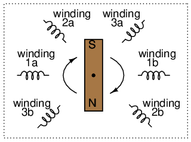
Three-phase alternator
The phase angle shift of 120o is a function of the actual rotational angle shift of the three pairs of windings (Figure below). If the magnet is rotating clockwise, winding 3 will generate its peak instantaneous voltage exactly 120o (of alternator shaft rotation) after winding 2, which will hits its peak 120o after winding 1. The magnet passes by each pole pair at different positions in the rotational movement of the shaft. Where we decide to place the windings will dictate the amount of phase shift between the windings' AC voltage waveforms. If we make winding 1 our “reference” voltage source for phase angle (0o), then winding 2 will have a phase angle of -120o (120o lagging, or 240o leading) and winding 3 an angle of -240o (or 120o leading).
This sequence of phase shifts has a definite order. For clockwise rotation of the shaft, the order is 1-2-3 (winding 1 peaks first, them winding 2, then winding 3). This order keeps repeating itself as long as we continue to rotate the alternator's shaft. (Figure below)
Clockwise rotation phase sequence: 1-2-3.
However, if we reverse the rotation of the alternator's shaft (turn it counter-clockwise), the magnet will pass by the pole pairs in the opposite sequence. Instead of 1-2-3, we'll have 3-2-1. Now, winding 2's waveform will be leading 120o ahead of 1 instead of lagging, and 3 will be another 120o ahead of 2. (Figure below)
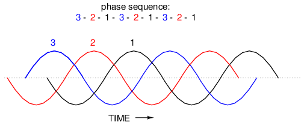
Counterclockwise rotation phase sequence: 3-2-1.
The order of voltage waveform sequences in a polyphase system is called phase rotation or phase sequence. If we're using a polyphase voltage source to power resistive loads, phase rotation will make no difference at all. Whether 1-2-3 or 3-2-1, the voltage and current magnitudes will all be the same. There are some applications of three-phase power, as we will see shortly, that depend on having phase rotation being one way or the other. Since voltmeters and ammeters would be useless in telling us what the phase rotation of an operating power system is, we need to have some other kind of instrument capable of doing the job.
One ingenious circuit design uses a capacitor to introduce a phase shift between voltage and current, which is then used to detect the sequence by way of comparison between the brightness of two indicator lamps in Figure below.
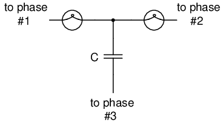
Phase sequence detector compares brightness of two lamps.
The two lamps are of equal filament resistance and wattage. The capacitor is sized to have approximately the same amount of reactance at system frequency as each lamp's resistance. If the capacitor were to be replaced by a resistor of equal value to the lamps' resistance, the two lamps would glow at equal brightness, the circuit being balanced. However, the capacitor introduces a phase shift between voltage and current in the third leg of the circuit equal to 90o. This phase shift, greater than 0o but less than 120o, skews the voltage and current values across the two lamps according to their phase shifts relative to phase 3. The following SPICE analysis demonstrates what will happen: (Figure below), "phase rotation detector -- sequence = v1-v2-v3"
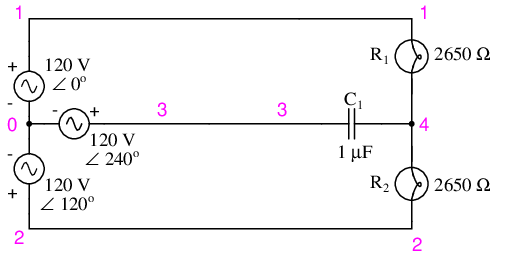
SPICE circuit for phase sequence detector.
phase rotation detector -- sequence = v1-v2-v3 v1 1 0 ac 120 0 sin v2 2 0 ac 120 120 sin v3 3 0 ac 120 240 sin r1 1 4 2650 r2 2 4 2650 c1 3 4 1u .ac lin 1 60 60 .print ac v(1,4) v(2,4) v(3,4) .end freq v(1,4) v(2,4) v(3,4) 6.000E+01 4.810E+01 1.795E+02 1.610E+02
The resulting phase shift from the capacitor causes the voltage across phase 1 lamp (between nodes 1 and 4) to fall to 48.1 volts and the voltage across phase 2 lamp (between nodes 2 and 4) to rise to 179.5 volts, making the first lamp dim and the second lamp bright. Just the opposite will happen if the phase sequence is reversed: "phase rotation detector -- sequence = v3-v2-v1 "
phase rotation detector -- sequence = v3-v2-v1 v1 1 0 ac 120 240 sin v2 2 0 ac 120 120 sin v3 3 0 ac 120 0 sin r1 1 4 2650 r2 2 4 2650 c1 3 4 1u .ac lin 1 60 60 .print ac v(1,4) v(2,4) v(3,4) .end freq v(1,4) v(2,4) v(3,4) 6.000E+01 1.795E+02 4.810E+01 1.610E+02
Here,("phase rotation detector -- sequence = v3-v2-v1") the first lamp receives 179.5 volts while the second receives only 48.1 volts.
We've investigated how phase rotation is produced (the order in which pole pairs get passed by the alternator's rotating magnet) and how it can be changed by reversing the alternator's shaft rotation. However, reversal of the alternator's shaft rotation is not usually an option open to an end-user of electrical power supplied by a nationwide grid (“the” alternator actually being the combined total of all alternators in all power plants feeding the grid). There is a much easier way to reverse phase sequence than reversing alternator rotation: just exchange any two of the three “hot” wires going to a three-phase load.
This trick makes more sense if we take another look at a running phase sequence of a three-phase voltage source:
1-2-3 rotation: 1-2-3-1-2-3-1-2-3-1-2-3-1-2-3 . . . 3-2-1 rotation: 3-2-1-3-2-1-3-2-1-3-2-1-3-2-1 . . .
What is commonly designated as a “1-2-3” phase rotation could just as well be called “2-3-1” or “3-1-2,” going from left to right in the number string above. Likewise, the opposite rotation (3-2-1) could just as easily be called “2-1-3” or “1-3-2.”
Starting out with a phase rotation of 3-2-1, we can try all the possibilities for swapping any two of the wires at a time and see what happens to the resulting sequence in Figure below.
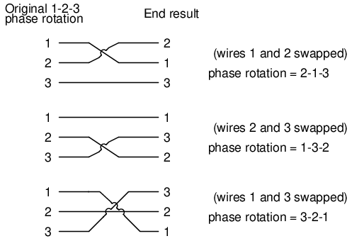
All possibilities of swapping any two wires.
No matter which pair of “hot” wires out of the three we choose to swap, the phase rotation ends up being reversed (1-2-3 gets changed to 2-1-3, 1-3-2 or 3-2-1, all equivalent).
Initially we explored the idea of three-phase power systems by connecting three voltage sources together in what is commonly known as the “Y” (or “star”) configuration. This configuration of voltage sources is characterized by a common connection point joining one side of each source. (Figure below)
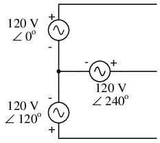
Three-phase “Y” connection has three voltage sources connected to a common point.
If we draw a circuit showing each voltage source to be a coil of wire (alternator or transformer winding) and do some slight rearranging, the “Y” configuration becomes more obvious in Figure below.
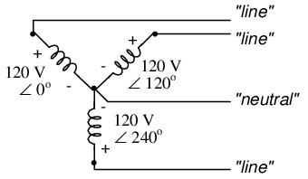
Three-phase, four-wire “Y” connection uses a "common" fourth wire.
The three conductors leading away from the voltage sources (windings) toward a load are typically called lines, while the windings themselves are typically called phases. In a Y-connected system, there may or may not (Figure below) be a neutral wire attached at the junction point in the middle, although it certainly helps alleviate potential problems should one element of a three-phase load fail open, as discussed earlier.
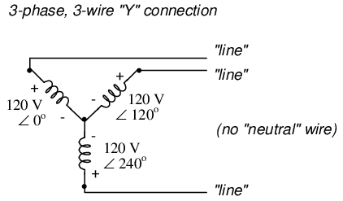
Three-phase, three-wire “Y” connection does not use the neutral wire.
When we measure voltage and current in three-phase systems, we need to be specific as to where we're measuring. Line voltage refers to the amount of voltage measured between any two line conductors in a balanced three-phase system. With the above circuit, the line voltage is roughly 208 volts. Phase voltage refers to the voltage measured across any one component (source winding or load impedance) in a balanced three-phase source or load. For the circuit shown above, the phase voltage is 120 volts. The terms line current and phase current follow the same logic: the former referring to current through any one line conductor, and the latter to current through any one component.
Y-connected sources and loads always have line voltages greater than phase voltages, and line currents equal to phase currents. If the Y-connected source or load is balanced, the line voltage will be equal to the phase voltage times the square root of 3:
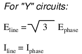
However, the “Y” configuration is not the only valid one for connecting three-phase voltage source or load elements together. Another configuration is known as the “Delta,” for its geometric resemblance to the Greek letter of the same name (Δ). Take close notice of the polarity for each winding in Figure below.
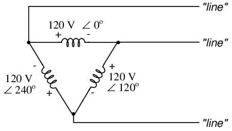
Three-phase, three-wire Δ connection has no common.
At first glance it seems as though three voltage sources like this would create a short-circuit, electrons flowing around the triangle with nothing but the internal impedance of the windings to hold them back. Due to the phase angles of these three voltage sources, however, this is not the case.
One quick check of this is to use Kirchhoff's Voltage Law to see if the three voltages around the loop add up to zero. If they do, then there will be no voltage available to push current around and around that loop, and consequently there will be no circulating current. Starting with the top winding and progressing counter-clockwise, our KVL expression looks something like this:
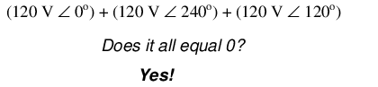
Indeed, if we add these three vector quantities together, they do add up to zero. Another way to verify the fact that these three voltage sources can be connected together in a loop without resulting in circulating currents is to open up the loop at one junction point and calculate voltage across the break: (Figure below)
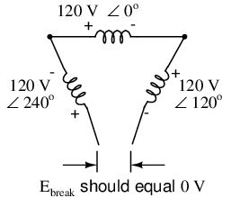
Voltage across open Δ should be zero.
Starting with the right winding (120 V ∠ 120o) and progressing counter-clockwise, our KVL equation looks like this:
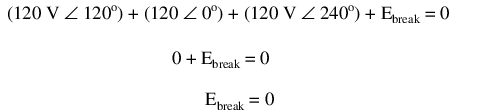
Sure enough, there will be zero voltage across the break, telling us that no current will circulate within the triangular loop of windings when that connection is made complete.
Having established that a Δ-connected three-phase voltage source will not burn itself to a crisp due to circulating currents, we turn to its practical use as a source of power in three-phase circuits. Because each pair of line conductors is connected directly across a single winding in a Δ circuit, the line voltage will be equal to the phase voltage. Conversely, because each line conductor attaches at a node between two windings, the line current will be the vector sum of the two joining phase currents. Not surprisingly, the resulting equations for a Δ configuration are as follows:
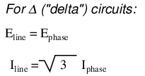
Let's see how this works in an example circuit: (Figure below)
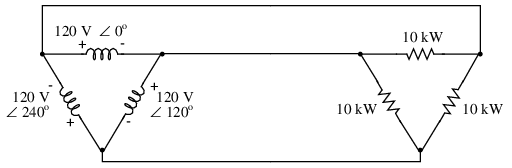
The load on the Δ source is wired in a Δ.
With each load resistance receiving 120 volts from its respective phase winding at the source, the current in each phase of this circuit will be 83.33 amps:
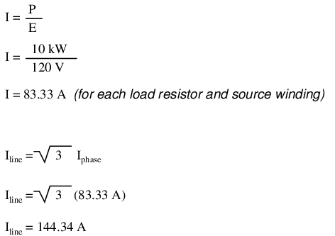
So each line current in this three-phase power system is equal to 144.34 amps, which is substantially more than the line currents in the Y-connected system we looked at earlier. One might wonder if we've lost all the advantages of three-phase power here, given the fact that we have such greater conductor currents, necessitating thicker, more costly wire. The answer is no. Although this circuit would require three number 1 gage copper conductors (at 1000 feet of distance between source and load this equates to a little over 750 pounds of copper for the whole system), it is still less than the 1000+ pounds of copper required for a single-phase system delivering the same power (30 kW) at the same voltage (120 volts conductor-to-conductor).
One distinct advantage of a Δ-connected system is its lack of a neutral wire. With a Y-connected system, a neutral wire was needed in case one of the phase loads were to fail open (or be turned off), in order to keep the phase voltages at the load from changing. This is not necessary (or even possible!) in a Δ-connected circuit. With each load phase element directly connected across a respective source phase winding, the phase voltage will be constant regardless of open failures in the load elements.
Perhaps the greatest advantage of the Δ-connected source is its fault tolerance. It is possible for one of the windings in a Δ-connected three-phase source to fail open (Figure below) without affecting load voltage or current!
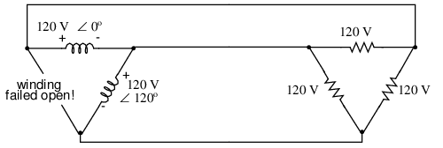
Even with a source winding failure, the line voltage is still 120 V, and load phase voltage is still 120 V. The only difference is extra current in the remaining functional source windings.
The only consequence of a source winding failing open for a Δ-connected source is increased phase current in the remaining windings. Compare this fault tolerance with a Y-connected system suffering an open source winding in Figure below.
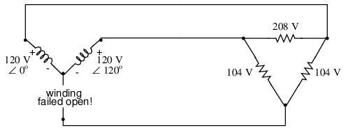
Open “Y” source winding halves the voltage on two loads of a Δ connected load.
With a Δ-connected load, two of the resistances suffer reduced voltage while one remains at the original line voltage, 208. A Y-connected load suffers an even worse fate (Figure below) with the same winding failure in a Y-connected source
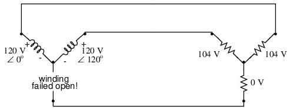
Open source winding of a "Y-Y" system halves the voltage on two loads, and looses one load entirely.
In this case, two load resistances suffer reduced voltage while the third loses supply voltage completely! For this reason, Δ-connected sources are preferred for reliability. However, if dual voltages are needed (e.g. 120/208) or preferred for lower line currents, Y-connected systems are the configuration of choice.